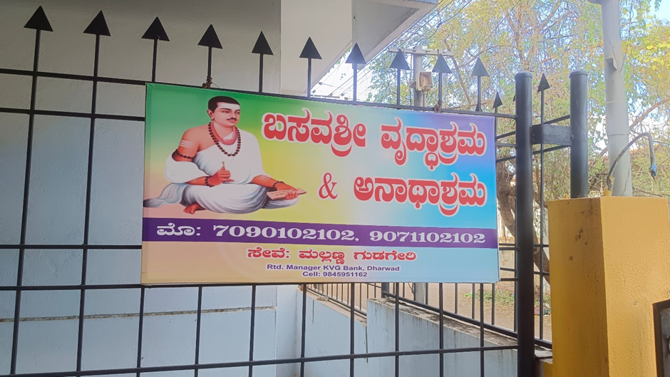
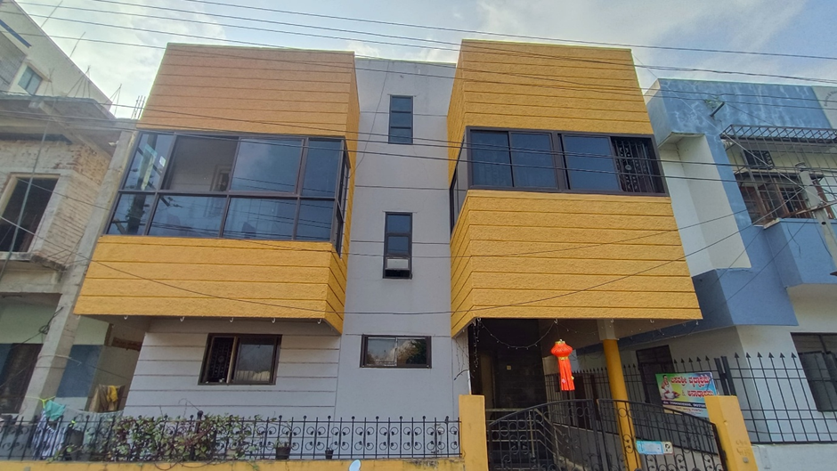
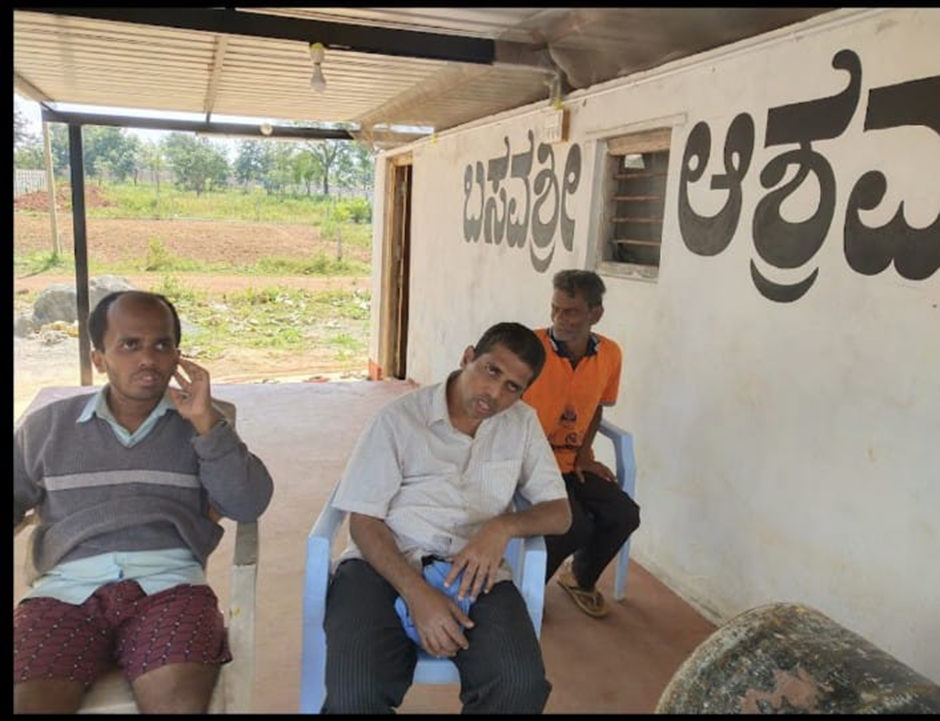
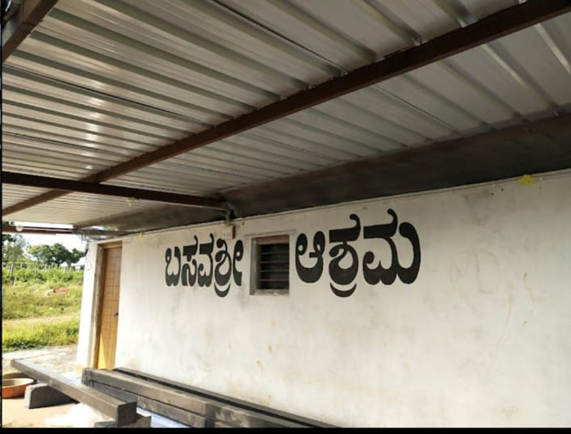

Basavashri Old Age Home is a well-maintained facility with two branches in Hubballi, designed to provide a safe and comfortable environment for senior citizens.
One branch is located in the city, while the other is in Anchatgeri, 9 kilometers from Hubballi.
The Anchatgeri branch is surrounded by nature, offering fresh air and a peaceful environment that is ideal for elderly residents to live in comfort.
The Hubballi branch currently houses 25 residents, while the Anchatgeri branch accommodates 50.
The home offers both free and paid admission. For free admission, the individual must be declared homeless by the local police station and provide a letter as proof.
Paid admissions are also available at a reasonable fee.
Both branches provide all basic facilities, including regular medical checkups, clean living spaces, and nutritious meals.
The staff are friendly and attentive, ensuring every resident feels cared for.
Our Facilities
Spacious and Separate Accommodation
Regular Health Checkups
Nutritious and Well-Balanced Food
Peaceful and Nature-Friendly Environment
Friendly and Attentive Staff
Image Gallery

Basavashri ashram in Hubbali city

Building of Basavashri ashram, Hubbali city

Senior citizens in Basavashri ashram, Anchatgeri

Basavashri ashram, Anchatgeri
Contact Us
Phone: +917090102102
Address: 2nd Cross, Omkar Building, Bus Stand, Gokul Rd, near Niketan Heritage, Dollars Heights, behind New KSRTC, Dollars Colony, Chaitanya Nagar, Rajendra Nagar, Hubballi, Karnataka 580030